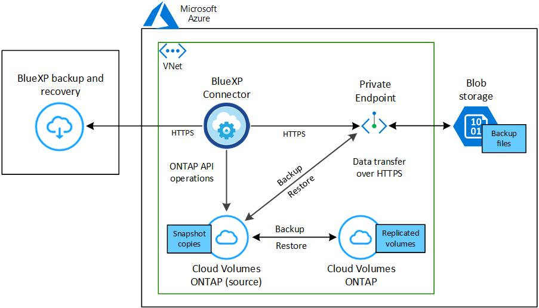
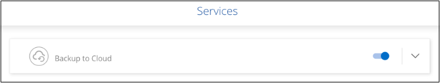

Versionshinweise
Versionshinweise
Backup von Cloud Volumes ONTAP Daten in Azure Blob Storage
 Änderungen vorschlagen
Änderungen vorschlagen
Führen Sie einige Schritte durch, um zu beginnen, Volume-Daten aus Ihren Cloud Volumes ONTAP Systemen in Azure Blob Storage zu sichern.
Schnellstart
Führen Sie diese Schritte schnell durch, oder scrollen Sie nach unten zu den verbleibenden Abschnitten, um ausführliche Informationen zu erhalten.
 Überprüfen Sie die Unterstützung Ihrer Konfiguration
Überprüfen Sie die Unterstützung Ihrer Konfiguration-
Sie verwenden Cloud Volumes ONTAP 9.8 oder höher in Azure (ONTAP 9.8P13 und höher wird empfohlen).
-
Sie verfügen über ein gültiges Cloud-Provider-Abonnement für den Speicherplatz, auf dem sich Ihre Backups befinden.
-
Sie haben sich für das angemeldet "BlueXP Marketplace Backup-Angebot", Oder Sie haben gekauft "Und aktiviert" Eine BYOL-Lizenz für BlueXP Backup und Recovery von NetApp.
 Bereiten Sie Ihren BlueXP Connector vor
Bereiten Sie Ihren BlueXP Connector vorWenn Sie bereits einen Connector in einer Azure-Region implementiert haben, sind Sie fertig. Falls nicht, müssen Sie einen BlueXP Connector in Azure installieren, um Cloud Volumes ONTAP Daten in Azure Blob Storage zu sichern. Der Connector kann auf einer Website mit vollem Internetzugang ("Standard-Modus") oder mit eingeschränkter Internetverbindung ("eingeschränkter Modus") installiert werden.
 Lizenzanforderungen prüfen
Lizenzanforderungen prüfenSie müssen die Lizenzanforderungen sowohl für Azure als auch für BlueXP prüfen.
Siehe Lizenzanforderungen prüfen.
 Überprüfen Sie die ONTAP Netzwerkanforderungen für die Replizierung von Volumes
Überprüfen Sie die ONTAP Netzwerkanforderungen für die Replizierung von VolumesStellen Sie sicher, dass die Quell- und Zielsysteme die Anforderungen der ONTAP Version und des Netzwerks erfüllen.
 BlueXP Backup und Recovery ermöglichen
BlueXP Backup und Recovery ermöglichenWählen Sie die Arbeitsumgebung aus und klicken Sie auf Aktivieren > Backup Volumes neben dem Backup- und Recovery-Dienst im rechten Fenster.
 Aktivieren Sie Backups auf Ihren ONTAP Volumes
Aktivieren Sie Backups auf Ihren ONTAP VolumesFolgen Sie dem Setup-Assistenten, um die Replikations- und Backup-Richtlinien auszuwählen, die Sie verwenden möchten, sowie die Volumes, die Sie sichern möchten.
Überprüfen Sie die Unterstützung Ihrer Konfiguration
Lesen Sie die folgenden Anforderungen, um sicherzustellen, dass Sie über eine unterstützte Konfiguration verfügen, bevor Sie mit dem Backup von Volumes in Azure Blob Storage beginnen.
Die folgende Abbildung zeigt jede Komponente und die Verbindungen, die Sie zwischen ihnen vorbereiten müssen.
Optional können Sie für replizierte Volumes auch eine Verbindung zu einem sekundären ONTAP-System über eine öffentliche oder private Verbindung herstellen.

- Unterstützte ONTAP-Versionen
-
Mindestens ONTAP 9.8; ONTAP 9.8P13 und höher wird empfohlen.
- Unterstützte Azure Regionen
-
BlueXP Backup und Recovery wird in allen Azure Regionen unterstützt "Wobei Cloud Volumes ONTAP unterstützt wird"; Einschließlich Azure Government Regionen.
BlueXP Backup und Recovery stellt den Blob-Container standardmäßig mit lokaler Redundanz (LRS) zur Kostenoptimierung bereit. Sie können diese Einstellung auf Zonenredundanz (ZRS) ändern, nachdem BlueXP Backup und Recovery aktiviert wurde, wenn Sie sicherstellen möchten, dass Ihre Daten zwischen verschiedenen Zonen repliziert werden. Siehe Microsoft-Anweisungen für "Ändern der Replizierung Ihres Storage-Kontos".
- Erforderliche Einrichtung zum Erstellen von Backups in einem anderen Azure Abonnement
-
Standardmäßig werden Backups mit demselben Abonnement erstellt wie das für Ihr Cloud Volumes ONTAP-System verwendete. Wenn Sie ein anderes Azure Abonnement für Ihre Backups verwenden möchten, müssen Sie dies tun "Melden Sie sich beim Azure-Portal an und verlinken Sie die beiden Abonnements".
Lizenzanforderungen prüfen
Für die PAYGO-Lizenzierung für BlueXP Backup und Recovery ist vor der Aktivierung von BlueXP Backup und Recovery ein Abonnement über den Azure Marketplace erforderlich. Die Abrechnung für BlueXP Backup und Recovery erfolgt über dieses Abonnement. "Sie können sich auf der Seite Details Credentials des Assistenten für die Arbeitsumgebung anmelden".
Für die BYOL-Lizenzierung für BlueXP Backup und Recovery benötigen Sie die Seriennummer von NetApp, anhand derer Sie den Service für die Dauer und Kapazität der Lizenz nutzen können. "Erfahren Sie, wie Sie Ihre BYOL-Lizenzen managen". Sie müssen eine BYOL-Lizenz verwenden, wenn der Connector und das Cloud Volumes ONTAP-System an einem Dark Site („Private Mode“) bereitgestellt werden.
Darüber hinaus benötigen Sie ein Microsoft Azure-Abonnement für den Speicherplatz, auf dem sich Ihre Backups befinden.
Bereiten Sie Ihren BlueXP Connector vor
Der Connector kann in einer Azure-Region mit vollem oder eingeschränktem Internetzugang (Standard- oder eingeschränkter Modus) installiert werden. "Einzelheiten finden Sie in den BlueXP Implementierungsmodi".
Überprüfen oder Hinzufügen von Berechtigungen zum Konnektor
Um die Such- und Wiederherstellungsfunktion für BlueXP Backup und Recovery verwenden zu können, müssen Sie in der Rolle für den Connector über bestimmte Berechtigungen verfügen, damit dieser auf den Azure Synapse Workspace und das Data Lake Storage Account zugreifen kann. Lesen Sie die unten stehenden Berechtigungen, und befolgen Sie die Schritte, wenn Sie die Richtlinie ändern müssen.
-
Sie müssen den Azure Synapse Analytics Resource Provider (genannt „Microsoft.Synapse“) im Abonnement registrieren. "Erfahren Sie, wie Sie diesen Ressourcenanbieter für Ihr Abonnement registrieren". Sie müssen der Subscription Owner oder Contributor sein, um den Ressourcenanbieter zu registrieren.
-
Port 1433 muss für die Kommunikation zwischen dem Connector und den Azure Synapse SQL-Diensten offen sein.
-
Identifizieren Sie die Rolle, die der virtuellen Konnektor-Maschine zugewiesen ist:
-
Öffnen Sie im Azure-Portal den Service für Virtual Machines.
-
Wählen Sie die virtuelle Verbindungsmaschine aus.
-
Wählen Sie unter Einstellungen Identität aus.
-
Wählen Sie Azure-Rollenzuweisungen aus.
-
Notieren Sie sich die benutzerdefinierte Rolle, die der virtuellen Connector-Maschine zugewiesen ist.
-
-
Aktualisieren der benutzerdefinierten Rolle:
-
Öffnen Sie im Azure-Portal Ihr Azure-Abonnement.
-
Wählen Sie Zugriffskontrolle (IAM) > Rollen.
-
Wählen Sie die Auslassungspunkte (…) für die benutzerdefinierte Rolle aus und wählen Sie dann Bearbeiten.
-
Wählen Sie JSON und fügen Sie die folgenden Berechtigungen hinzu:
Details
"Microsoft.Storage/storageAccounts/listkeys/action", "Microsoft.Storage/storageAccounts/read", "Microsoft.Storage/storageAccounts/write", "Microsoft.Storage/storageAccounts/blobServices/containers/read", "Microsoft.Storage/storageAccounts/listAccountSas/action", "Microsoft.KeyVault/vaults/read", "Microsoft.KeyVault/vaults/accessPolicies/write", "Microsoft.Network/networkInterfaces/read", "Microsoft.Resources/subscriptions/locations/read", "Microsoft.Network/virtualNetworks/read", "Microsoft.Network/virtualNetworks/subnets/read", "Microsoft.Resources/subscriptions/resourceGroups/read", "Microsoft.Resources/subscriptions/resourcegroups/resources/read", "Microsoft.Resources/subscriptions/resourceGroups/write", "Microsoft.Authorization/locks/*", "Microsoft.Network/privateEndpoints/write", "Microsoft.Network/privateEndpoints/read", "Microsoft.Network/privateDnsZones/virtualNetworkLinks/write", "Microsoft.Network/virtualNetworks/join/action", "Microsoft.Network/privateDnsZones/A/write", "Microsoft.Network/privateDnsZones/read", "Microsoft.Network/privateDnsZones/virtualNetworkLinks/read", "Microsoft.Network/networkInterfaces/delete", "Microsoft.Network/networkSecurityGroups/delete", "Microsoft.Resources/deployments/delete", "Microsoft.ManagedIdentity/userAssignedIdentities/assign/action", "Microsoft.Synapse/workspaces/write", "Microsoft.Synapse/workspaces/read", "Microsoft.Synapse/workspaces/delete", "Microsoft.Synapse/register/action", "Microsoft.Synapse/checkNameAvailability/action", "Microsoft.Synapse/workspaces/operationStatuses/read", "Microsoft.Synapse/workspaces/firewallRules/read", "Microsoft.Synapse/workspaces/replaceAllIpFirewallRules/action", "Microsoft.Synapse/workspaces/operationResults/read", "Microsoft.Synapse/workspaces/privateEndpointConnectionsApproval/action" -
Klicken Sie auf Review + Update und dann auf Update.
-
Erforderliche Informationen zur Nutzung von vom Kunden gemanagten Schlüsseln für die Datenverschlüsselung
Sie können im Aktivierungsassistenten Ihre eigenen, vom Kunden gemanagten Schlüssel für die Datenverschlüsselung verwenden, anstatt die von Microsoft verwalteten Standardschlüssel zu verwenden. In diesem Fall benötigen Sie das Azure-Abonnement, den Key Vault-Namen und den Key. "Sehen Sie, wie Sie Ihre eigenen Schlüssel verwenden".
BlueXP Backup und Recovery unterstützt Azure Zugriffsrichtlinien als Berechtigungsmodell. Das rollenbasierte Berechtigungsmodell Azure RBAC (Role-Based Access Control) wird derzeit nicht unterstützt.
Erstellen Sie Ihr Azure Blob Storage-Konto
Standardmäßig erstellt der Service Storage-Konten für Sie. Wenn Sie Ihre eigenen Speicherkonten verwenden möchten, können Sie diese erstellen, bevor Sie den Assistenten für die Backup-Aktivierung starten und dann diese Speicherkonten im Assistenten auswählen.
Überprüfen Sie die ONTAP Netzwerkanforderungen für die Replizierung von Volumes
Wenn Sie planen, mithilfe von BlueXP Backup und Recovery replizierte Volumes auf einem sekundären ONTAP System zu erstellen, stellen Sie sicher, dass die Quell- und Zielsysteme die folgenden Netzwerkanforderungen erfüllen.
Netzwerkanforderungen für On-Premises-ONTAP
-
Wenn sich der Cluster an Ihrem Standort befindet, sollten Sie über eine Verbindung zwischen Ihrem Unternehmensnetzwerk und Ihrem virtuellen Netzwerk des Cloud-Providers verfügen. Hierbei handelt es sich in der Regel um eine VPN-Verbindung.
-
ONTAP Cluster müssen zusätzliche Subnetz-, Port-, Firewall- und Cluster-Anforderungen erfüllen.
Da Sie Daten auf Cloud Volumes ONTAP oder auf lokale Systeme replizieren können, prüfen Sie Peering-Anforderungen für lokale ONTAP Systeme. "Anzeigen von Voraussetzungen für Cluster-Peering in der ONTAP-Dokumentation".
Netzwerkanforderungen für Cloud Volumes ONTAP
-
Die Sicherheitsgruppe der Instanz muss die erforderlichen ein- und ausgehenden Regeln enthalten: Speziell Regeln für ICMP und die Ports 11104 und 11105. Diese Regeln sind in der vordefinierten Sicherheitsgruppe enthalten.
-
Um Daten zwischen zwei Cloud Volumes ONTAP Systemen in verschiedenen Subnetzen zu replizieren, müssen die Subnetze gemeinsam geroutet werden (dies ist die Standardeinstellung).
BlueXP Backup und Recovery auf Cloud Volumes ONTAP ermöglichen
Die Aktivierung von BluXP Backup und Recovery ist einfach. Die Schritte unterscheiden sich leicht, je nachdem, ob Sie ein bestehendes oder ein neues Cloud Volumes ONTAP-System besitzen.
BlueXP Backup und Recovery auf einem neuen System aktivieren
BlueXP Backup und Recovery sind standardmäßig im Assistenten für die Arbeitsumgebung aktiviert. Achten Sie darauf, dass die Option aktiviert bleibt.
Siehe "Starten von Cloud Volumes ONTAP in Azure" Anforderungen und Details für die Erstellung Ihres Cloud Volumes ONTAP Systems.

|
Wenn Sie den Namen der Ressourcengruppe auswählen möchten, deaktivieren Sie bei der Bereitstellung von Cloud Volumes ONTAP BlueXP Backup und Recovery. Befolgen Sie die Schritte für Aktivieren von BlueXP Backup und Recovery auf einem vorhandenen System Um das Backup und Recovery von BlueXP zu aktivieren und die Ressourcengruppe auszuwählen. |
-
Wählen Sie im BlueXP-Bildschirm Arbeitsumgebung hinzufügen, wählen Sie den Cloud-Provider aus und wählen Sie Neu hinzufügen. Wählen Sie Cloud Volumes ONTAP erstellen.
-
Wählen Sie Microsoft Azure als Cloud-Provider aus und wählen Sie dann einen einzelnen Knoten oder ein HA-System aus.
-
Geben Sie auf der Seite Azure Credentials definieren den Namen, die Client-ID, den Clientschlüssel und die Verzeichnis-ID ein, und klicken Sie auf Weiter.
-
Füllen Sie die Seite „Details & Zugangsdaten“ aus und stellen Sie sicher, dass ein Azure Marketplace-Abonnement besteht, und klicken Sie auf Weiter.
-
Lassen Sie auf der Seite Dienste den Dienst aktiviert, und klicken Sie auf Weiter.

-
Führen Sie die Seiten im Assistenten aus, um das System bereitzustellen.
BlueXP Backup und Recovery ist auf dem System aktiviert. Wenn Sie Volumes auf diesen Cloud Volumes ONTAP Systemen erstellt haben, starten Sie BlueXP Backup und Recovery sowie "Aktivieren Sie die Sicherung auf jedem Volume, das Sie schützen möchten".
BlueXP Backup und Recovery auf einem vorhandenen System aktivieren
BlueXP Backup und Recovery sind jederzeit möglich – direkt aus der Arbeitsumgebung.
-
Wählen Sie auf dem BlueXP-Bildschirm die Arbeitsumgebung aus und wählen Sie im rechten Bereich neben dem Backup- und Recovery-Dienst Enable aus.
Wenn das Azure Blob Ziel für Ihre Backups als Arbeitsumgebung auf dem Canvas existiert, können Sie das Cluster auf die Azure Blob Arbeitsumgebung ziehen, um den Setup-Assistenten zu starten.

-
Füllen Sie die Seiten im Assistenten zur Implementierung von BlueXP Backup und Recovery aus.
-
Wenn Sie Backups initiieren möchten, fahren Sie mit fort Aktivieren Sie Backups auf Ihren ONTAP Volumes.
Aktivieren Sie Backups auf Ihren ONTAP Volumes
Sie können Backups jederzeit direkt aus Ihrer On-Premises-Arbeitsumgebung heraus aktivieren.
Ein Assistent führt Sie durch die folgenden wichtigen Schritte:
Das können Sie auch Zeigt die API-Befehle an Kopieren Sie im Überprüfungsschritt den Code, um die Backup-Aktivierung für zukünftige Arbeitsumgebungen zu automatisieren.
Starten Sie den Assistenten
-
Greifen Sie auf eine der folgenden Arten auf den Assistenten zur Aktivierung von Backup und Recovery zu:
-
Wählen Sie auf dem BlueXP-Bildschirm die Arbeitsumgebung aus, und wählen Sie im rechten Bereich neben dem Sicherungs- und Wiederherstellungsdienst die Option Enable > Backup Volumes aus.

Wenn das Azure-Ziel für Ihre Backups als Arbeitsumgebung auf dem Canvas vorhanden ist, können Sie das ONTAP-Cluster auf den Azure Blob-Objekt-Storage ziehen.
-
Wählen Sie in der Sicherungs- und Wiederherstellungsleiste Volumes aus. Wählen Sie auf der Registerkarte Volumes die Option actions aus
 Und wählen Sie Backup aktivieren für ein einzelnes Volume (das noch nicht über Replikation oder Backup auf Objektspeicher verfügt).
Und wählen Sie Backup aktivieren für ein einzelnes Volume (das noch nicht über Replikation oder Backup auf Objektspeicher verfügt).
Auf der Seite Einführung des Assistenten werden die Schutzoptionen einschließlich lokaler Snapshots, Replikation und Backups angezeigt. Wenn Sie die zweite Option in diesem Schritt gewählt haben, wird die Seite „Backup-Strategie definieren“ mit einem ausgewählten Volume angezeigt.
-
-
Fahren Sie mit den folgenden Optionen fort:
-
Wenn Sie bereits einen BlueXP Connector haben, sind Sie fertig. Wählen Sie einfach Weiter.
-
Wenn Sie noch keinen BlueXP Connector haben, wird die Option Connector hinzufügen angezeigt. Siehe Bereiten Sie Ihren BlueXP Connector vor.
-
Wählen Sie die Volumes aus, die Sie sichern möchten
Wählen Sie die Volumes aus, die Sie schützen möchten. Ein geschütztes Volume verfügt über eine oder mehrere der folgenden Elemente: Snapshot-Richtlinie, Replizierungsrichtlinie und Backup-to-Object-Richtlinie.
Sie können FlexVol- oder FlexGroup-Volumes schützen. Sie können jedoch keine Kombination dieser Volumes auswählen, wenn Sie Backups für eine funktionierende Umgebung aktivieren. Informieren Sie sich darüber "Aktivieren Sie das Backup für zusätzliche Volumes in der Arbeitsumgebung" (FlexVol oder FlexGroup), nachdem Sie das Backup für die ersten Volumes konfiguriert haben.
|
|
|
Beachten Sie, dass die Richtlinien, die Sie später auswählen, diese vorhandenen Richtlinien überschreiben, wenn die von Ihnen ausgewählten Volumes bereits Snapshot- oder Replikationsrichtlinien angewendet haben.
-
Wählen Sie auf der Seite Volumes auswählen das Volume oder die Volumes aus, die Sie schützen möchten.
-
Optional können Sie die Zeilen so filtern, dass nur Volumes mit bestimmten Volumentypen, Stilen und mehr angezeigt werden, um die Auswahl zu erleichtern.
-
Nachdem Sie das erste Volume ausgewählt haben, können Sie alle FlexVol-Volumes auswählen. (FlexGroup Volumes können nur einzeln ausgewählt werden.) Um alle vorhandenen FlexVol-Volumes zu sichern, aktivieren Sie zuerst ein Volume und dann das Kontrollkästchen in der Titelzeile. (
 ).
). -
Um einzelne Volumes zu sichern, aktivieren Sie das Kontrollkästchen für jedes Volume (
 ).
).
-
-
Wählen Sie Weiter.
Backup-Strategie definieren
Zur Definition der Backup-Strategie gehören die folgenden Optionen:
-
Unabhängig davon, ob Sie eine oder alle Backup-Optionen: Lokale Snapshots, Replikation und Backup-to-Object-Storage möchten
-
Der Netapp Architektur Sind
-
Lokale Snapshot-Richtlinie
-
Replikationsziel und -Richtlinie
Wenn die ausgewählten Volumes andere Snapshot- und Replikationsrichtlinien haben als die in diesem Schritt ausgewählten Richtlinien, werden die vorhandenen Richtlinien überschrieben. -
Backup von Objekt-Storage-Informationen (Provider-, Verschlüsselungs-, Netzwerk-, Backup-Richtlinien- und Exportoptionen)
-
Wählen Sie auf der Seite Backup-Strategie definieren eine oder alle der folgenden Optionen aus. Alle drei sind standardmäßig ausgewählt:
-
Lokale Snapshots: Wenn Sie eine Replikation oder Sicherung auf Objektspeicher durchführen, müssen lokale Snapshots erstellt werden.
-
Replikation: Erstellt replizierte Volumes auf einem anderen ONTAP-Speichersystem.
-
Backup: Sichert Volumes auf Objektspeicher.
-
-
Architektur: Wenn Sie Replikation und Backup gewählt haben, wählen Sie einen der folgenden Informationsflüsse:
-
Kaskadierung: Informationsflüsse vom primären Speichersystem zum sekundären und vom sekundären zum Objektspeicher.
-
Fan out: Der Informationsfluss vom primären zum sekundären und vom primären zum Objektspeicher.
Einzelheiten zu diesen Architekturen finden Sie unter "Planen Sie Ihren Weg zum Schutz".
-
-
Lokaler Snapshot: Wählen Sie eine vorhandene Snapshot-Richtlinie aus oder erstellen Sie eine.

Informationen zum Erstellen einer benutzerdefinierten Richtlinie vor der Aktivierung des Snapshots finden Sie unter "Erstellen einer Richtlinie". Um eine Richtlinie zu erstellen, wählen Sie Create New Policy aus, und führen Sie die folgenden Schritte aus:
-
Geben Sie den Namen der Richtlinie ein.
-
Wählen Sie bis zu 5 Schichtpläne aus, die in der Regel unterschiedliche Frequenzen haben.
-
Wählen Sie Erstellen.
-
-
Replikation: Stellen Sie die folgenden Optionen ein:
-
Replikationsziel: Wählen Sie die Zielarbeitsumgebung und SVM aus. Wählen Sie optional das Zielaggregat oder die Aggregate und das Präfix oder Suffix aus, die dem Namen des replizierten Volumes hinzugefügt werden sollen.
-
Replikationsrichtlinie: Wählen Sie eine vorhandene Replikationsrichtlinie oder erstellen Sie eine.
Informationen zum Erstellen einer benutzerdefinierten Richtlinie vor der Aktivierung der Replikation finden Sie unter "Erstellen einer Richtlinie". Um eine Richtlinie zu erstellen, wählen Sie Create New Policy aus, und führen Sie die folgenden Schritte aus:
-
Geben Sie den Namen der Richtlinie ein.
-
Wählen Sie bis zu 5 Schichtpläne aus, die in der Regel unterschiedliche Frequenzen haben.
-
Wählen Sie Erstellen.
-
-
-
Backup auf Objekt: Wenn Sie Backup ausgewählt haben, stellen Sie die folgenden Optionen ein:
-
Provider: Wählen Sie Microsoft Azure.
-
Provider-Einstellungen: Geben Sie die Provider-Details ein.
Geben Sie den Bereich ein, in dem die Backups gespeichert werden sollen. Dies kann eine andere Region sein als der Speicherort des Cloud Volumes ONTAP Systems.
Erstellen Sie entweder ein neues Storage-Konto oder wählen Sie ein vorhandenes aus.
Geben Sie das zum Speichern der Backups verwendete Azure-Abonnement ein. Dabei kann es sich um ein anderes Abonnement als um das Cloud Volumes ONTAP-System handelt. Wenn Sie ein anderes Azure Abonnement für Ihre Backups verwenden möchten, müssen Sie dies tun "Melden Sie sich beim Azure-Portal an und verlinken Sie die beiden Abonnements".
Erstellen Sie entweder Ihre eigene Ressourcengruppe, die den Blob-Container verwaltet, oder wählen Sie den Typ und die Gruppe der Ressourcengruppe aus.
Wenn Sie Ihre Backup-Dateien vor Änderung oder Löschung schützen möchten, stellen Sie sicher, dass das Storage-Konto mit aktiviertem unveränderlichem Storage erstellt wurde und eine Aufbewahrungsfrist von 30 Tagen verwendet wird.
Wenn Sie zur weiteren Kostenoptimierung ältere Backup-Dateien in Azure Archivspeicher verschieben möchten, stellen Sie sicher, dass das Speicherkonto über die entsprechende Lebenszyklusregel verfügt. -
Verschlüsselungsschlüssel: Wenn Sie ein neues Azure-Speicherkonto erstellt haben, geben Sie die Schlüsselinformationen des Verschlüsselungsschlüssels ein, die Sie vom Provider erhalten haben. Wählen Sie aus, ob Sie die Azure Standardschlüssel verwenden oder Ihre eigenen vom Kunden verwalteten Schlüssel aus Ihrem Azure Konto auswählen werden, um die Verschlüsselung Ihrer Daten zu managen.
Wenn Sie Ihre eigenen vom Kunden verwalteten Schlüssel verwenden möchten, geben Sie den Schlüsselspeicher und die Schlüsselinformationen ein. "Erfahren Sie, wie Sie Ihre eigenen Schlüssel verwenden".
Wenn Sie ein vorhandenes Microsoft Storage-Konto ausgewählt haben, sind Verschlüsselungsinformationen bereits verfügbar. Sie müssen es daher jetzt nicht eingeben. -
Netzwerk: Wählen Sie den IPspace und ob Sie einen privaten Endpunkt verwenden. Der private Endpunkt ist standardmäßig deaktiviert.
-
Der IPspace im ONTAP Cluster, in dem sich die Volumes, die Sie sichern möchten, befinden. Die Intercluster-LIFs für diesen IPspace müssen über Outbound-Internetzugang verfügen.
-
Wählen Sie optional aus, ob Sie einen zuvor konfigurierten privaten Azure-Endpunkt verwenden möchten. "Informieren Sie sich über die Verwendung eines privaten Azure Endpunkts".
-
-
Backup-Richtlinie: Wählen Sie eine vorhandene Richtlinie für Backup-to-Object-Storage aus.
Informationen zum Erstellen einer benutzerdefinierten Richtlinie vor der Aktivierung der Sicherung finden Sie unter "Erstellen einer Richtlinie". Um eine Richtlinie zu erstellen, wählen Sie Create New Policy aus, und führen Sie die folgenden Schritte aus:
-
Geben Sie den Namen der Richtlinie ein.
-
Wählen Sie bis zu 5 Schichtpläne aus, die in der Regel unterschiedliche Frequenzen haben.
-
Wählen Sie Erstellen.
-
-
Exportieren vorhandener Snapshot-Kopien als Backup-Kopien in den Objektspeicher: Wenn es lokale Snapshot-Kopien für Volumes in dieser Arbeitsumgebung gibt, die mit dem Backup-Zeitplan-Label übereinstimmen, das Sie gerade für diese Arbeitsumgebung ausgewählt haben (z. B. täglich, wöchentlich usw.), wird diese zusätzliche Eingabeaufforderung angezeigt. Aktivieren Sie dieses Kontrollkästchen, damit alle historischen Snapshots als Backup-Dateien in den Objektspeicher kopiert werden, um einen möglichst vollständigen Schutz für Ihre Volumes zu gewährleisten.
-
-
Wählen Sie Weiter.
Überprüfen Sie Ihre Auswahl
Dies ist die Möglichkeit, Ihre Auswahl zu überprüfen und gegebenenfalls Anpassungen vorzunehmen.
-
Überprüfen Sie auf der Seite „Überprüfen“ Ihre Auswahl.
-
Aktivieren Sie optional das Kontrollkästchen, um * die Snapshot-Policy-Labels automatisch mit den Label der Replikations- und Backup-Policy* zu synchronisieren. Dadurch werden Snapshots mit einem Label erstellt, das den Labels in den Replizierungs- und Backup-Richtlinien entspricht.
-
Wählen Sie Sicherung Aktivieren.
Mit BlueXP Backup und Recovery werden erste Backups Ihrer Volumes erstellt. Der Basistransfer des replizierten Volumes und der Backup-Datei beinhaltet eine vollständige Kopie der Daten des primären Storage-Systems. Nachfolgende Transfers enthalten differenzielle Kopien der primären Storage-Daten, die in Snapshot Kopien enthalten sind.
Ein repliziertes Volume wird im Zielcluster erstellt, das mit dem primären Volume synchronisiert wird.
In der von Ihnen eingegebenen Ressourcengruppe wird ein Blob-Speicher-Container erstellt und die Backup-Dateien dort gespeichert.
BlueXP Backup und Recovery stellt den Blob-Container standardmäßig mit lokaler Redundanz (LRS) zur Kostenoptimierung bereit. Sie können diese Einstellung auf Zoneredundanz (ZRS) ändern, wenn Sie sicherstellen möchten, dass Ihre Daten zwischen verschiedenen Zonen repliziert werden. Siehe Microsoft-Anweisungen für "Ändern der Replizierung Ihres Storage-Kontos".
Das Dashboard für Volume Backup wird angezeigt, sodass Sie den Status der Backups überwachen können.
Sie können den Status von Backup- und Wiederherstellungsjobs auch mit dem überwachen "Fenster Job-Überwachung".
Zeigt die API-Befehle an
Möglicherweise möchten Sie die API-Befehle anzeigen und optional kopieren, die im Assistenten Sicherung und Wiederherstellung aktivieren verwendet werden. Dies ist möglicherweise sinnvoll, um die Backup-Aktivierung in zukünftigen Arbeitsumgebungen zu automatisieren.
-
Wählen Sie im Assistenten Backup und Recovery aktivieren API-Anforderung anzeigen aus.
-
Um die Befehle in die Zwischenablage zu kopieren, wählen Sie das Symbol Kopieren.
Was kommt als Nächstes?
-
Das können Sie "Management von Backup Files und Backup-Richtlinien". Dies umfasst das Starten und Stoppen von Backups, das Löschen von Backups, das Hinzufügen und Ändern des Backup-Zeitplans und vieles mehr.
-
Das können Sie "Management von Backup-Einstellungen auf Cluster-Ebene". Dies umfasst unter anderem die Änderung der verfügbaren Netzwerkbandbreite für das Hochladen von Backups in den Objekt-Storage, die Änderung der automatischen Backup-Einstellung für zukünftige Volumes.
-
Das können Sie auch "Wiederherstellung von Volumes, Ordnern oder einzelnen Dateien aus einer Sicherungsdatei" Zu einem Cloud Volumes ONTAP System in Azure oder zu einem ONTAP System vor Ort.